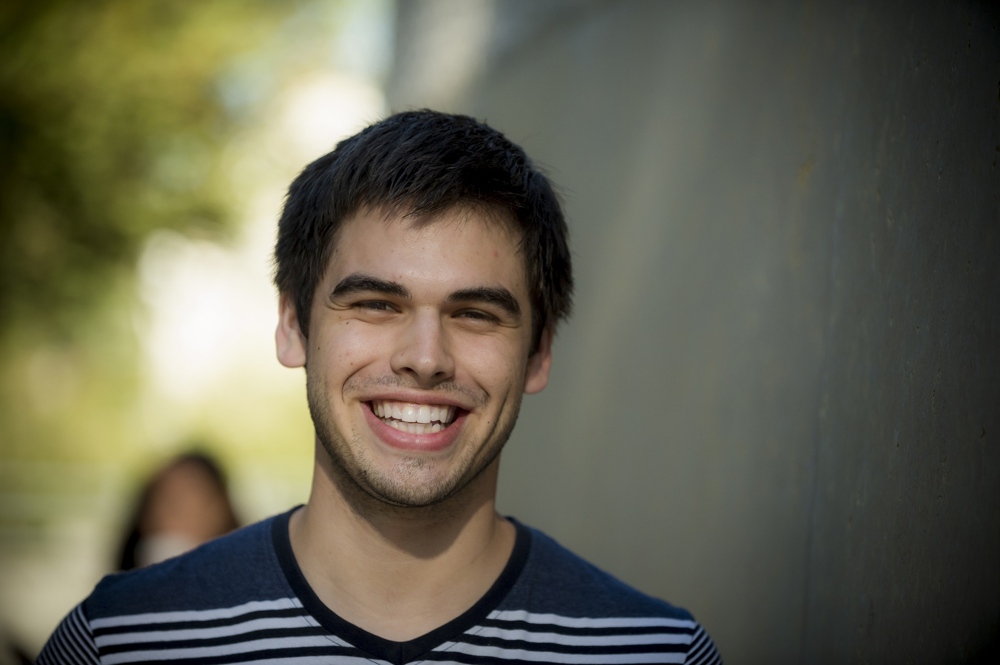

Anthony B Lopez
Welcome To My Page

About Me
Anthony Bahadir Lopez
Department of Computer Science and Engineering
University of California, San Diego
9500, Gilman Drive
La Jolla, CA 92093
abl012@ucsd.edu
I am a 4th year student at
UC San Diego studying Computer Engineering.
My interests lie in wireless sensor network security
and hardware security. I am an NSF Camp, UC LEADS,
and NACME scholar and currently an intern for CIPRES Rest Services located at the San Diego Supercomputer Center. In addition, I am involved as an intern for a startup company called Slithr Vehicles as part of the Moxie Center in UC San Diego.
In the past, I was a member of the Synergy Lab at UC
San Diego researching the attacks and defeneses of the
ZigBee protocol and an undergraduate researcher under
Dr. Miodrag Potkonjak for the summer of 2014 at UC Los Angeles.
Projects and Presentations
ZigBee WSN Security Overview and Evaluation
Link to Resume
Resume